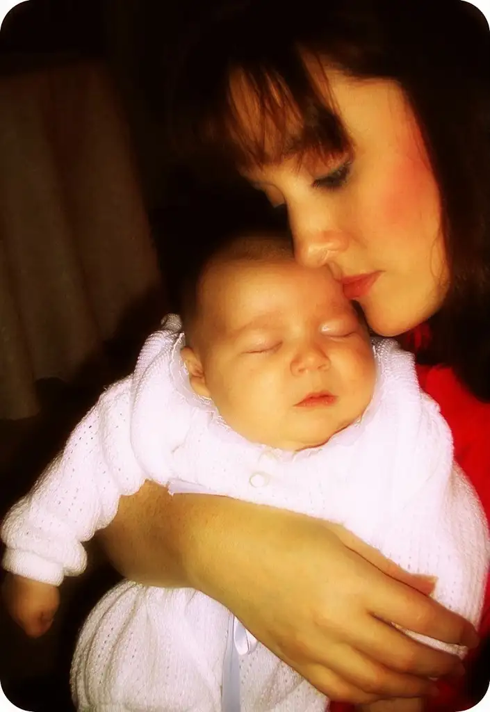

The thought came to me when I was pregnant with our fourth child. During that pregnancy, my aunt, my father’s oldest sister, was dying of liver cancer, and I was intently pondering life and death.
It started here:
Life doesn’t end with this one, and the next life continues on eternally. Eternal life means forever, as in never-ever-ever ending.
And quickly progressed to this:
Wait now, eternal? Who would want that, really? How could that even be possible? Wouldn’t it get…boring or…overly long? Is that really something I even want?
{kind=link}
Once my mind hooked into this, I couldn’t let go. For a moment, I felt physically ill thinking about it. We can’t wrap our brains around eternal, I know this, and yet this wasn’t about not wrapping my brain around eternal as, for the first time, confronting eternal. This was the first time I’d ever thought of it in a negative light and it was extremely disturbing.
Until this day, I’d always taken for granted that our natural propensity is to yearn for something more — that we have an innate sense of a life after this one — the Act II. I know I’d always been moved in that direction. However, the earthly part of me seemed trained more in the way of anticipating endings. And so a non-ending just didn’t make sense.
To be sure, I did not let this thought keep me up at nights. It was only an occasional disruption that would take hold for a little while. Eventually I would let it go and think nothing more of it.
But recently, it happened again, and I knew when I met with my spiritual director I had to bring this question before him. I felt a little silly as I explained being bothered by the idea of infinitude, feeling sure he’d think me a little loony, but he didn’t. I’m assuming it’s a thought others have had, too.
Now, I will be honest. I didn’t think he’d be able to come up with anything satisfactory, and I will also share that I can’t remember everything he said in his explanation. But at some point, I experienced one of those “aha!” moments that changes everything.
“We really can’t understand it, that’s true,” he said, “but maybe we can think of it this way. We can understand relationships. Think of the love you have for your children. Is that something you can imagine going on forever?”
He continued on for a bit after that, but I didn’t hear any of it. I was stopped at the thought of the love I have for my children and how I could never-ever-ever imagine that ending…ever. And in that moment, even though I still cannot, nor will I ever, fully conceive of how forever works, it made a whole lot of sense how it’s possible for something to endure infinitely.
 |
| Roxane and child #4, Adam, on his Baptism Day |
{kind=link}
The “Love never ends” we find in 1 Cor. 13:8 came to life, too. When my father died in January, that’s what I was left with: love. And yet I haven’t felt for a moment that love has left, even though my father has, nor that he is really gone. No, I don’t feel that at all.
I don’t know how it will work. It still doesn’t make sense to me that we would ever want to continue existing into eternity and on and on and on. But I do know for certain that the love I have for my family doesn’t seem to have an end point. Even on our worst days together, love, not as a concept but a reality, is very, very big and yes, I can quite imagine it lasting.
And now, I can embrace the idea of eternal life and not feel ishy at all. Instead, when I think on it, the warmest, most wonderful feeling comes over me.
It’s something I could definitely get used to, forever.